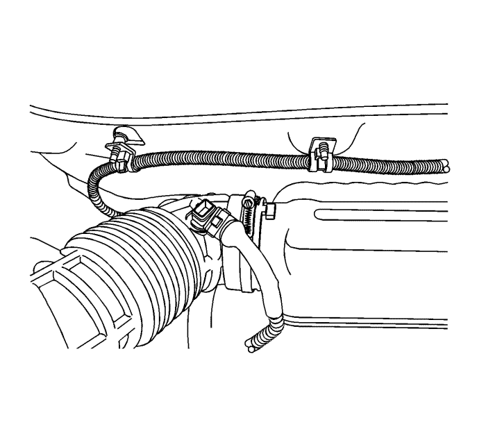
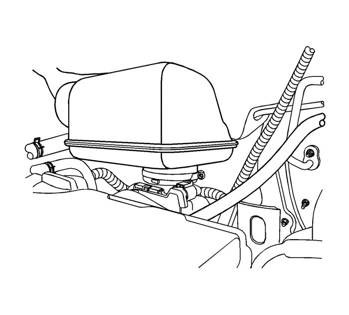
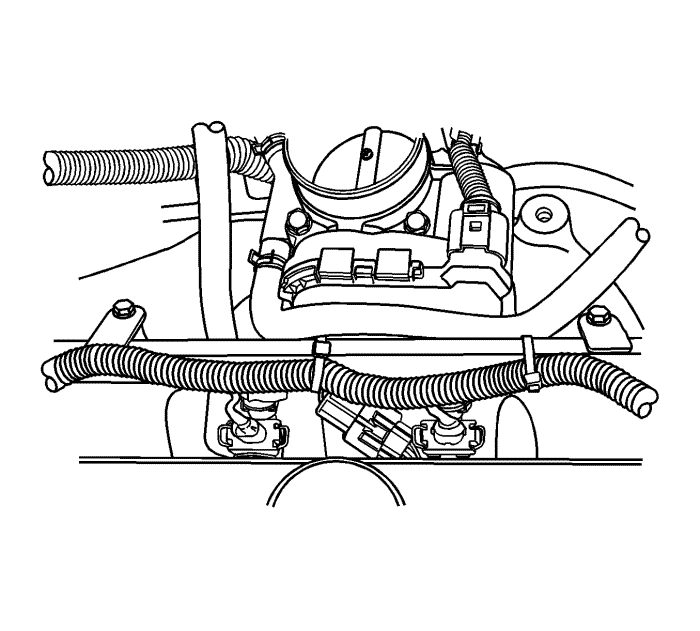
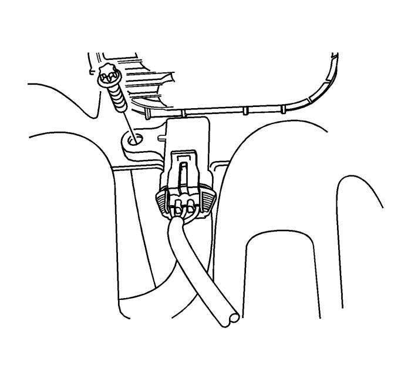

Sustitución del sensor de presión absoluta del colector — LD9
Procedimiento de desmontaje
Advertencia: Consulte Advertencia sobre la desconexión de la batería en la sección Prólogo

- Desconecte el cable de batería negativo.
- Desenchufe el conector del sensor de temperatura del aire de admisión (IAT).
- Afloje la abrazadera y desconecte el manguito de salida del filtro de aire del resonador.

- Afloje la abrazadera y extraiga el resonador del cuerpo del acelerador electrónico.

- Desmonte el tubo de distribución del combustible. Consultar Sustitución del conjunto del tubo de distribución de los inyectores de combustible : LE5 o LE9 → LD9 .
- Desenchufe el conector del sensor de presión absoluta del colector de admisión (MAP).

- Quite el tornillo de retención del MAP.
- Desmonte del colector de admisión el MAP.
Procedimiento de montaje
- Monte el sensor MAP en el colector de admisión.
Precaución: Consulte Precaución con las fijaciones en la sección Prólogo
- Coloque el tornillo de retención del MAP.
Apretar
Apriete el perno de retención del sensor MAP a 4 N·m (35 lib. pulg.).
- Monte el tubo de distribución de combustible. Consultar Sustitución del conjunto del tubo de distribución de los inyectores de combustible : LE5 o LE9 → LD9 .
- Enchufe el conector del MAP.
- Instale el resonador en el cuerpo del acelerador electrónico.
- Conecte el manguito de salida del filtro de aire al resonador.
- Enchufe el conector del IAT.
- Conecte el cable negativo de la batería.
| © Copyright Chevrolet Europe. All rights reserved |